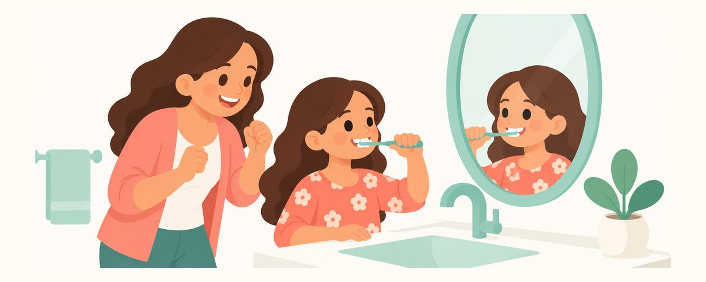

Les dents des enfants, expliquées par un dentiste
De la grossesse à 18 ans, les sujets dentaires utiles aux parents à chaque étape. Ce blog approfondit les articles de l'app Calendrier Dentaire.
Recevez-les au bon moment
Saisissez la date de naissance de votre enfant (ou la date prévue d'accouchement) dans l'app Calendrier Dentaire et ces articles vous parviendront sous forme de rappels au bon moment. Gratuit, sans inscription.
Grossesse
 Gencives qui saignent pendant la grossesseLes gencives qui saignent sont fréquentes pendant la grossesse. N'arrêtez pas de vous brosser les dents : faites-le simplement plus doucement et plus soigneusement.
Gencives qui saignent pendant la grossesseLes gencives qui saignent sont fréquentes pendant la grossesse. N'arrêtez pas de vous brosser les dents : faites-le simplement plus doucement et plus soigneusement. Les dents de votre bébé se forment maintenantLes dents de lait commencent à se former vers la 6e semaine de grossesse. Une alimentation équilibrée soutient le développement des dents de votre bébé.
Les dents de votre bébé se forment maintenantLes dents de lait commencent à se former vers la 6e semaine de grossesse. Une alimentation équilibrée soutient le développement des dents de votre bébé. Ne vous brossez pas les dents juste après les nauséesSe brosser les dents juste après avoir vomi use les dents ramollies par l'acide. Rincez à l'eau et attendez 30 minutes avant de brosser.
Ne vous brossez pas les dents juste après les nauséesSe brosser les dents juste après avoir vomi use les dents ramollies par l'acide. Rincez à l'eau et attendez 30 minutes avant de brosser. Les soins dentaires pendant la grossesse sont sans dangerLes contrôles et les soins sont sans danger pendant la grossesse. Le deuxième trimestre (semaines 14 à 27) est la période la plus confortable.
Les soins dentaires pendant la grossesse sont sans dangerLes contrôles et les soins sont sans danger pendant la grossesse. Le deuxième trimestre (semaines 14 à 27) est la période la plus confortable. Les médicaments dentaires pendant la grossesseLes antibiotiques de la famille des tétracyclines peuvent colorer les dents du bébé : on les évite. Demandez avant de prendre tout antidouleur ou antibiotique.
Les médicaments dentaires pendant la grossesseLes antibiotiques de la famille des tétracyclines peuvent colorer les dents du bébé : on les évite. Demandez avant de prendre tout antidouleur ou antibiotique. Maladie des gencives et naissance prématurée : ce que l'on saitLa maladie des gencives est associée aux naissances prématurées, mais il n'est pas prouvé qu'elle en soit la cause. Les soins des gencives sont sans danger pendant la grossesse.
Maladie des gencives et naissance prématurée : ce que l'on saitLa maladie des gencives est associée aux naissances prématurées, mais il n'est pas prouvé qu'elle en soit la cause. Les soins des gencives sont sans danger pendant la grossesse. Les indispensables bucco-dentaires pour la valise de maternitéDes compresses, une brosse à dents pour bébé, un dentifrice fluoré et un anneau de dentition : c'est tout ce qu'il vous faut. Évitez la benzocaïne et l'ambre.
Les indispensables bucco-dentaires pour la valise de maternitéDes compresses, une brosse à dents pour bébé, un dentifrice fluoré et un anneau de dentition : c'est tout ce qu'il vous faut. Évitez la benzocaïne et l'ambre. Un plan dentaire pour après la naissancePrévoyez dès maintenant votre contrôle après l'accouchement. L'allaitement est recommandé ; les tétées toute la nuit une fois les dents sorties sont un facteur de risque.
Un plan dentaire pour après la naissancePrévoyez dès maintenant votre contrôle après l'accouchement. L'allaitement est recommandé ; les tétées toute la nuit une fois les dents sorties sont un facteur de risque.Nouveau-né
 Né avec une dent ?Une dent à la naissance ou pendant le premier mois, c'est rare. La plupart sont simplement surveillées, mais une dent mobile doit être vérifiée par un dentiste.
Né avec une dent ?Une dent à la naissance ou pendant le premier mois, c'est rare. La plupart sont simplement surveillées, mais une dent mobile doit être vérifiée par un dentiste. Essuyer les gencives avant l'arrivée des dentsEssuyer les gencives avec une compresse propre et humide après les tétées, c'est le premier pas vers l'habitude du brossage pour toute la vie.
Essuyer les gencives avant l'arrivée des dentsEssuyer les gencives avec une compresse propre et humide après les tétées, c'est le premier pas vers l'habitude du brossage pour toute la vie. Petits points blancs et plaques blanches dans la bouche du nouveau-néLes petits points blancs dans la bouche disparaissent généralement seuls. Un dépôt qui ne part pas quand on l'essuie peut être du muguet.
Petits points blancs et plaques blanches dans la bouche du nouveau-néLes petits points blancs dans la bouche disparaissent généralement seuls. Un dépôt qui ne part pas quand on l'essuie peut être du muguet. Frein de langue court : faut-il le couper ?Un frein de langue ou de lèvre court ne nécessite aucun traitement si l'alimentation se passe bien. On ne l'examine qu'en cas de difficultés à téter.
Frein de langue court : faut-il le couper ?Un frein de langue ou de lèvre court ne nécessite aucun traitement si l'alimentation se passe bien. On ne l'examine qu'en cas de difficultés à téter.Bébé (première année)
 Sucette et succion du pouceLa succion est normale chez le nourrisson. L'objectif est d'arrêter avant 3 ans, et ne trempez jamais la sucette dans quelque chose de sucré.
Sucette et succion du pouceLa succion est normale chez le nourrisson. L'objectif est d'arrêter avant 3 ans, et ne trempez jamais la sucette dans quelque chose de sucré. Poussées dentaires : ce qui est normal et ce qui ne l'est pasBave et grognons sont fréquents, mais une forte fièvre ou une diarrhée ne viennent pas des dents. Évitez les gels à la benzocaïne.
Poussées dentaires : ce qui est normal et ce qui ne l'est pasBave et grognons sont fréquents, mais une forte fièvre ou une diarrhée ne viennent pas des dents. Évitez les gels à la benzocaïne. La première dentLa première dent apparaît généralement vers 6 mois, en commençant par le bas, devant. Commencez le dentifrice fluoré le jour même.
La première dentLa première dent apparaît généralement vers 6 mois, en commençant par le bas, devant. Commencez le dentifrice fluoré le jour même. Commencer la diversification sans sucrePas de sucre dans les repas de bébé, et pas de jus de fruits avant 12 mois. Découvrir le goût sucré plus tard aide à prévenir les caries.
Commencer la diversification sans sucrePas de sucre dans les repas de bébé, et pas de jus de fruits avant 12 mois. Découvrir le goût sucré plus tard aide à prévenir les caries. L'ordre d'apparition des dents de laitLes 20 dents de lait sont généralement toutes sorties vers 30 mois. Avoir environ 6 mois d'avance ou de retard, c'est normal.
L'ordre d'apparition des dents de laitLes 20 dents de lait sont généralement toutes sorties vers 30 mois. Avoir environ 6 mois d'avance ou de retard, c'est normal. Pas d'endormissement avec le biberonS'endormir avec un biberon ou en tétant provoque des caries derrière les dents de devant. Nettoyez les dents après les tétées de nuit.
Pas d'endormissement avec le biberonS'endormir avec un biberon ou en tétant provoque des caries derrière les dents de devant. Nettoyez les dents après les tétées de nuit. Apprendre à boire au verreC'est le moment d'essayer le verre ! L'objectif : arrêter le biberon entre 12 et 18 mois. Les tasses à paille et les verres ouverts sont recommandés.
Apprendre à boire au verreC'est le moment d'essayer le verre ! L'objectif : arrêter le biberon entre 12 et 18 mois. Les tasses à paille et les verres ouverts sont recommandés. Première visite chez le dentiste avant le premier anniversairePrévoyez la première visite chez le dentiste dans les 6 mois suivant la première dent, et au plus tard au premier anniversaire.
Première visite chez le dentiste avant le premier anniversairePrévoyez la première visite chez le dentiste dans les 6 mois suivant la première dent, et au plus tard au premier anniversaire. Premier anniversaire : le point sur la santé bucco-dentaireJoyeux premier anniversaire ! C'est le moment d'arrêter le biberon, de brosser deux fois par jour et de commencer le vernis fluoré.
Premier anniversaire : le point sur la santé bucco-dentaireJoyeux premier anniversaire ! C'est le moment d'arrêter le biberon, de brosser deux fois par jour et de commencer le vernis fluoré.Tout-petit (1–3 ans)
 Le fluor est-il sans danger pour mon enfant ?Utilisé en bonne quantité, le dentifrice fluoré est un moyen éprouvé de prévenir les caries. Voici ce qu'il faut savoir.
Le fluor est-il sans danger pour mon enfant ?Utilisé en bonne quantité, le dentifrice fluoré est un moyen éprouvé de prévenir les caries. Voici ce qu'il faut savoir. Cloques et aphtes dans la boucheQuand des cloques dans la bouche rendent difficile le fait de manger et de boire, le plus important est d'éviter la déshydratation.
Cloques et aphtes dans la boucheQuand des cloques dans la bouche rendent difficile le fait de manger et de boire, le plus important est d'éviter la déshydratation. Les premières molaires arriventLes premières molaires sortent généralement entre 13 et 19 mois. Brossez bien dans les sillons, et passez le fil dentaire dès que les dents se touchent.
Les premières molaires arriventLes premières molaires sortent généralement entre 13 et 19 mois. Brossez bien dans les sillons, et passez le fil dentaire dès que les dents se touchent. Les canines arrivent, c'est l'heure du contrôleLes canines de lait sortent généralement entre 16 et 23 mois. C'est le moment idéal pour commencer les contrôles réguliers.
Les canines arrivent, c'est l'heure du contrôleLes canines de lait sortent généralement entre 16 et 23 mois. C'est le moment idéal pour commencer les contrôles réguliers. Contrôle des 6 moisAu début, les caries ne font pas mal. Un contrôle et un vernis fluoré tous les 6 mois permettent de repérer tôt les petits changements.
Contrôle des 6 moisAu début, les caries ne font pas mal. Un contrôle et un vernis fluoré tous les 6 mois permettent de repérer tôt les petits changements. La « fenêtre d'infectivité » est-elle toujours d'actualité ?L'idée que les bactéries des caries ne se transmettent qu'entre 19 et 31 mois est dépassée. Le sucre et le fluor comptent davantage.
La « fenêtre d'infectivité » est-elle toujours d'actualité ?L'idée que les bactéries des caries ne se transmettent qu'entre 19 et 31 mois est dépassée. Le sucre et le fluor comptent davantage. Le moment de réduire les tétées de nuitUne fois les dents sorties, les tétées de nuit ou l'endormissement avec un biberon augmentent beaucoup le risque de caries. Réduisez progressivement.
Le moment de réduire les tétées de nuitUne fois les dents sorties, les tétées de nuit ou l'endormissement avec un biberon augmentent beaucoup le risque de caries. Réduisez progressivement. Se préparer pour le dentisteDécouvrir le dentiste à travers des livres et des jeux, et éviter les mots qui font peur, rend les visites beaucoup plus faciles.
Se préparer pour le dentisteDécouvrir le dentiste à travers des livres et des jeux, et éviter les mots qui font peur, rend les visites beaucoup plus faciles. 2 ans : la fréquence compte plus que la quantitéLes caries dépendent moins de la quantité de sucre que mange votre enfant que de la fréquence. Entre les repas, proposez uniquement de l'eau.
2 ans : la fréquence compte plus que la quantitéLes caries dépendent moins de la quantité de sucre que mange votre enfant que de la fréquence. Entre les repas, proposez uniquement de l'eau. Le xylitol aide-t-il à prévenir les caries ?Le xylitol est un édulcorant moins nocif que le sucre, mais les preuves de son effet contre les caries sont faibles.
Le xylitol aide-t-il à prévenir les caries ?Le xylitol est un édulcorant moins nocif que le sucre, mais les preuves de son effet contre les caries sont faibles. Les dernières dents de lait : les deuxièmes molairesLes deuxièmes molaires sortent généralement entre 23 et 33 mois. Une fois ces quatre-là sorties, les 20 dents de lait sont au complet !
Les dernières dents de lait : les deuxièmes molairesLes deuxièmes molaires sortent généralement entre 23 et 33 mois. Une fois ces quatre-là sorties, les 20 dents de lait sont au complet ! L'enfant brosse d'abord, le parent termineLaissez votre enfant brosser d'abord, puis terminez vous-même. Utilisez un minuteur de 2 minutes, et continuez jusqu'à 7 ou 8 ans.
L'enfant brosse d'abord, le parent termineLaissez votre enfant brosser d'abord, puis terminez vous-même. Utilisez un minuteur de 2 minutes, et continuez jusqu'à 7 ou 8 ans. Le vernis fluoré : à quoi il sertLe vernis fluoré est un fluor concentré appliqué au pinceau chez le dentiste. Il aide à réduire les caries des dents de lait.
Le vernis fluoré : à quoi il sertLe vernis fluoré est un fluor concentré appliqué au pinceau chez le dentiste. Il aide à réduire les caries des dents de lait. Quand une dent de lait est abîméeAprès une chute, une dent de lait abîmée est généralement simplement surveillée, et une dent de lait tombée n'est jamais remise en place.
Quand une dent de lait est abîméeAprès une chute, une dent de lait abîmée est généralement simplement surveillée, et une dent de lait tombée n'est jamais remise en place. 3 ans : du dentifrice de la taille d'un petit poisÀ partir de 3 ans, utilisez une quantité de dentifrice fluoré de la taille d'un petit pois et apprenez à recracher. C'est aussi le moment d'arrêter la sucette.
3 ans : du dentifrice de la taille d'un petit poisÀ partir de 3 ans, utilisez une quantité de dentifrice fluoré de la taille d'un petit pois et apprenez à recracher. C'est aussi le moment d'arrêter la sucette. Jus de fruits : 120 ml (4 oz) par jour, au verre, pendant les repasDe 1 à 3 ans, limitez le jus à 120 ml (4 oz) par jour, dans un verre normal, pendant les repas. Pas de tasse de jus toute la journée.
Jus de fruits : 120 ml (4 oz) par jour, au verre, pendant les repasDe 1 à 3 ans, limitez le jus à 120 ml (4 oz) par jour, dans un verre normal, pendant les repas. Pas de tasse de jus toute la journée.Âge préscolaire (3–6 ans)
 Quand les dents paraissent noires ou jaunesLes taches noires près de la gencive sont sans danger et le dentiste peut les enlever. Ne blanchissez jamais les dents d'un enfant à la maison.
Quand les dents paraissent noires ou jaunesLes taches noires près de la gencive sont sans danger et le dentiste peut les enlever. Ne blanchissez jamais les dents d'un enfant à la maison. Pourquoi soigner des dents de lait qui vont tomber de toute façon ?Les molaires de lait restent jusqu'à 10-12 ans. Des caries non soignées peuvent causer douleur, infection et dommages aux dents définitives.
Pourquoi soigner des dents de lait qui vont tomber de toute façon ?Les molaires de lait restent jusqu'à 10-12 ans. Des caries non soignées peuvent causer douleur, infection et dommages aux dents définitives. Une ligne blanche près de la gencive : le premier signe d'une carieUne tache blanche crayeuse près de la gencive est une carie débutante. Repérée maintenant, elle peut encore régresser.
Une ligne blanche près de la gencive : le premier signe d'une carieUne tache blanche crayeuse près de la gencive est une carie débutante. Repérée maintenant, elle peut encore régresser. La sédation ou l'anesthésie générale sont-elles sans danger pour les soins dentaires ?Les études n'ont trouvé aucune différence de QI chez les enfants après une seule anesthésie courte. Si on vous en propose une, vérifiez les conditions de sécurité.
La sédation ou l'anesthésie générale sont-elles sans danger pour les soins dentaires ?Les études n'ont trouvé aucune différence de QI chez les enfants après une seule anesthésie courte. Si on vous en propose une, vérifiez les conditions de sécurité. Les caries entre les molaires sont invisiblesVers 4 ans, les molaires se touchent et les caries se cachent entre elles. Le fil dentaire chaque jour et des radios si nécessaire permettent de les repérer.
Les caries entre les molaires sont invisiblesVers 4 ans, les molaires se touchent et les caries se cachent entre elles. Le fil dentaire chaque jour et des radios si nécessaire permettent de les repérer. Grincer des dents en dormantLe grincement des dents est fréquent chez l'enfant et diminue avec l'âge. S'il s'accompagne de ronflements ou de pauses respiratoires, consultez un médecin.
Grincer des dents en dormantLe grincement des dents est fréquent chez l'enfant et diminue avec l'âge. S'il s'accompagne de ronflements ou de pauses respiratoires, consultez un médecin. Les radios dentaires sont-elles sans danger pour mon enfant ?Les radios dentaires utilisent très peu de rayonnement, et renoncer à une radio nécessaire peut faire passer à côté d'une carie.
Les radios dentaires sont-elles sans danger pour mon enfant ?Les radios dentaires utilisent très peu de rayonnement, et renoncer à une radio nécessaire peut faire passer à côté d'une carie. Scellement des sillons des molaires de lait : mon enfant en a-t-il besoin ?Le scellement des sillons et le vernis fluoré dépendent du risque de caries. Demandez quel est le risque de {child} lors du prochain contrôle.
Scellement des sillons des molaires de lait : mon enfant en a-t-il besoin ?Le scellement des sillons et le vernis fluoré dépendent du risque de caries. Demandez quel est le risque de {child} lors du prochain contrôle. Des espaces entre les dents de devant : est-ce normal ?Des espaces entre les dents de lait de devant vers 5 ans, c'est normal. La mâchoire fait de la place pour les dents définitives, plus grandes.
Des espaces entre les dents de devant : est-ce normal ?Des espaces entre les dents de lait de devant vers 5 ans, c'est normal. La mâchoire fait de la place pour les dents définitives, plus grandes. Mon enfant a mauvaise haleineLa mauvaise haleine vient le plus souvent de la langue et de la plaque dentaire. Un écoulement malodorant d'une seule narine peut signaler un objet coincé.
Mon enfant a mauvaise haleineLa mauvaise haleine vient le plus souvent de la langue et de la plaque dentaire. Un écoulement malodorant d'une seule narine peut signaler un objet coincé. Les molaires de 6 ans : des dents définitives qui arrivent sans dent qui bougeLes premières molaires définitives se glissent derrière les dents de lait. Elles passent facilement inaperçues, mais ce sont elles qui durent le plus longtemps.
Les molaires de 6 ans : des dents définitives qui arrivent sans dent qui bougeLes premières molaires définitives se glissent derrière les dents de lait. Elles passent facilement inaperçues, mais ce sont elles qui durent le plus longtemps. La première dent qui bouge : la chute des dents de lait commenceEntre 6 et 7 ans, les dents de devant du bas se mettent à bouger et tombent. Les « dents de requin » se remettent généralement en place toutes seules.
La première dent qui bouge : la chute des dents de lait commenceEntre 6 et 7 ans, les dents de devant du bas se mettent à bouger et tombent. Les « dents de requin » se remettent généralement en place toutes seules. Dormir la bouche ouverte et ronflerLa respiration par la bouche et les ronflements peuvent influencer la morsure et la croissance du visage. Ne les prenez pas à la légère : cherchez la cause.
Dormir la bouche ouverte et ronflerLa respiration par la bouche et les ronflements peuvent influencer la morsure et la croissance du visage. Ne les prenez pas à la légère : cherchez la cause. Les molaires de 6 ans sont sorties ? C'est le moment du scellementUne fois les molaires de 6 ans complètement sorties, faites sceller les sillons sans attendre. C'est l'un des meilleurs moyens de prévenir les caries des molaires.
Les molaires de 6 ans sont sorties ? C'est le moment du scellementUne fois les molaires de 6 ans complètement sorties, faites sceller les sillons sans attendre. C'est l'un des meilleurs moyens de prévenir les caries des molaires.Âge scolaire
 7 ans : le moment d'un premier bilan orthodontiqueLes orthodontistes conseillent un premier bilan vers 7 ans. La plupart des enfants ont seulement besoin d'une surveillance ; certains problèmes sont plus faciles à traiter tôt.
7 ans : le moment d'un premier bilan orthodontiqueLes orthodontistes conseillent un premier bilan vers 7 ans. La plupart des enfants ont seulement besoin d'une surveillance ; certains problèmes sont plus faciles à traiter tôt. Bain de bouche fluoré : une option désormaisÀ partir de 6 ans, quand l'enfant sait recracher sans avaler, le bain de bouche fluoré est une option pour les enfants sujets aux caries.
Bain de bouche fluoré : une option désormaisÀ partir de 6 ans, quand l'enfant sait recracher sans avaler, le bain de bouche fluoré est une option pour les enfants sujets aux caries. Des taches blanches ou jaunes sur les nouvelles molaires ?Des taches sur les nouvelles molaires ou les dents de devant, surtout si elles sont sensibles, peuvent être une MIH. Repérée tôt, elle est plus facile à prendre en charge.
Des taches blanches ou jaunes sur les nouvelles molaires ?Des taches sur les nouvelles molaires ou les dents de devant, surtout si elles sont sensibles, peuvent être une MIH. Repérée tôt, elle est plus facile à prendre en charge.
8 ans : les dents de devant du haut changentLes quatre dents de devant du haut changent. Grandes, jaunâtres ou espacées : c'est normal. Le moment de tester le brossage en autonomie. Si une dent définitive est expulséeChaque minute compte. Ne touchez pas la racine. Remettez-la en place tout de suite, ou apportez-la dans du lait chez un dentiste dans les 30 minutes.
Si une dent définitive est expulséeChaque minute compte. Ne touchez pas la racine. Remettez-la en place tout de suite, ou apportez-la dans du lait chez un dentiste dans les 30 minutes. Une molaire de lait perdue trop tôt ? Gardez la placeSi une molaire de lait est perdue trop tôt, les dents voisines peuvent basculer dans l'espace vide. Demandez si un mainteneur d'espace est nécessaire.
Une molaire de lait perdue trop tôt ? Gardez la placeSi une molaire de lait est perdue trop tôt, les dents voisines peuvent basculer dans l'espace vide. Demandez si un mainteneur d'espace est nécessaire. Le protège-dents pour le sportFootball, basket, arts martiaux, vélo : les sports avec chocs ou chutes demandent un protège-dents. Un modèle sur mesure est le mieux adapté.
Le protège-dents pour le sportFootball, basket, arts martiaux, vélo : les sports avec chocs ou chutes demandent un protège-dents. Un modèle sur mesure est le mieux adapté. 10 ans : les molaires et les canines changentLes molaires de lait laissent la place aux prémolaires, et les canines de lait aux canines définitives. Ne forcez pas une dent qui bouge à tomber.
10 ans : les molaires et les canines changentLes molaires de lait laissent la place aux prémolaires, et les canines de lait aux canines définitives. Ne forcez pas une dent qui bouge à tomber. Sodas, boissons pour sportifs, boissons énergisantes et érosionLes boissons acides usent les dents, même sans sucre. Servez-les pendant un repas, avec une paille, et attendez avant de brosser.
Sodas, boissons pour sportifs, boissons énergisantes et érosionLes boissons acides usent les dents, même sans sucre. Servez-les pendant un repas, avec une paille, et attendez avant de brosser. Les deuxièmes molaires arrivent : deuxième série de scellementsEntre 11 et 13 ans, de nouvelles molaires sortent tout au fond. Elles passent facilement inaperçues : faites-les sceller une fois sorties.
Les deuxièmes molaires arrivent : deuxième série de scellementsEntre 11 et 13 ans, de nouvelles molaires sortent tout au fond. Elles passent facilement inaperçues : faites-les sceller une fois sorties. Quand commence généralement le traitement orthodontique completEntre 11 et 13 ans, beaucoup d'enfants commencent un traitement orthodontique complet. L'appareil change aussi la façon de se brosser les dents.
Quand commence généralement le traitement orthodontique completEntre 11 et 13 ans, beaucoup d'enfants commencent un traitement orthodontique complet. L'appareil change aussi la façon de se brosser les dents. 12 ans : les 28 dents définitives sont en placeVers 12 à 13 ans, les 28 dents définitives sont sorties. Elles sont là pour la vie : c'est à votre enfant de prendre le relais.
12 ans : les 28 dents définitives sont en placeVers 12 à 13 ans, les 28 dents définitives sont sorties. Elles sont là pour la vie : c'est à votre enfant de prendre le relais.Adolescents
 Le vaccin contre le HPV et la santé bucco-dentaireLe HPV est l'une des principales causes de cancer du fond de la bouche et de la gorge. Le vaccin est conseillé entre 11 et 12 ans.
Le vaccin contre le HPV et la santé bucco-dentaireLe HPV est l'une des principales causes de cancer du fond de la bouche et de la gorge. Le vaccin est conseillé entre 11 et 12 ans. Puberté et gencives gonfléesLes hormones de la puberté rendent les gencives plus réactives à la plaque dentaire. Si elles saignent, brossez plus soigneusement, pas moins.
Puberté et gencives gonfléesLes hormones de la puberté rendent les gencives plus réactives à la plaque dentaire. Si elles saignent, brossez plus soigneusement, pas moins. Après l'entraînement, de l'eauAcides et sucrées, les boissons pour sportifs et énergisantes usent l'émail. Pour l'exercice au quotidien, de l'eau suffit à {child}.
Après l'entraînement, de l'eauAcides et sucrées, les boissons pour sportifs et énergisantes usent l'émail. Pour l'exercice au quotidien, de l'eau suffit à {child}. Tabac, vapotage et sachets de nicotineLa cigarette électronique et les sachets de nicotine sont aussi du tabac. Parlez des risques, et commencez par une discussion plutôt qu'un sermon.
Tabac, vapotage et sachets de nicotineLa cigarette électronique et les sachets de nicotine sont aussi du tabac. Parlez des risques, et commencez par une discussion plutôt qu'un sermon. Blanchiment des dents et piercings buccauxLe blanchiment chez l'ado se décide avec un dentiste. Les piercings de la langue et des lèvres exposent aux dents ébréchées et aux gencives qui se rétractent.
Blanchiment des dents et piercings buccauxLe blanchiment chez l'ado se décide avec un dentiste. Les piercings de la langue et des lèvres exposent aux dents ébréchées et aux gencives qui se rétractent. Le moment de vérifier les dents de sagesseVers 16 ans, une radio panoramique montre comment évoluent les dents de sagesse. Le retrait se décide dent par dent.
Le moment de vérifier les dents de sagesseVers 16 ans, une radio panoramique montre comment évoluent les dents de sagesse. Le retrait se décide dent par dent. Vomissements fréquents et érosion dentaireDes vomissements ou un reflux répétés usent d'abord l'intérieur des dents de devant du haut. Le dentiste est parfois le premier à le remarquer.
Vomissements fréquents et érosion dentaireDes vomissements ou un reflux répétés usent d'abord l'intérieur des dents de devant du haut. Le dentiste est parfois le premier à le remarquer. 18 ans : cinq habitudes pour la vieDentifrice fluoré deux fois par jour, fil dentaire chaque jour, contrôles, moins de sucre et d'acide, pas de tabac. Cinq habitudes pour la vie.
18 ans : cinq habitudes pour la vieDentifrice fluoré deux fois par jour, fil dentaire chaque jour, contrôles, moins de sucre et d'acide, pas de tabac. Cinq habitudes pour la vie.Au fil de l'année
 Nouvelle année, nouvelles habitudes bucco-dentairesCommencez l'année avec une brosse à dents neuve, un minuteur de brossage et les contrôles de l'année notés dans l'agenda.
Nouvelle année, nouvelles habitudes bucco-dentairesCommencez l'année avec une brosse à dents neuve, un minuteur de brossage et les contrôles de l'année notés dans l'agenda. Traverser la saison des bonbonsPour les bonbons, la façon de les manger compte plus que la quantité. En une seule fois, sans les collants, et toujours un brossage avant le coucher.
Traverser la saison des bonbonsPour les bonbons, la façon de les manger compte plus que la quantité. En une seule fois, sans les collants, et toujours un brossage avant le coucher. L'été : piscine, vélo et blessures dentairesLes blessures dentaires augmentent en été. Pensez au casque, au protège-dents, et sachez quoi faire si une dent tombe.
L'été : piscine, vélo et blessures dentairesLes blessures dentaires augmentent en été. Pensez au casque, au protège-dents, et sachez quoi faire si une dent tombe. Un contrôle avant les vacances d'hiver, des règles pour les en-cas pendantUn contrôle avant les vacances et des heures fixes pour les en-cas pendant enlèvent une bonne partie des soucis de caries pendant les fêtes.
Un contrôle avant les vacances d'hiver, des règles pour les en-cas pendantUn contrôle avant les vacances et des heures fixes pour les en-cas pendant enlèvent une bonne partie des soucis de caries pendant les fêtes. La rentrée, un nouveau départ pour les dentsNouvelle année scolaire : une brosse à dents neuve, un œil sur le dépistage dentaire scolaire et un rinçage à l'eau après le déjeuner.
La rentrée, un nouveau départ pour les dentsNouvelle année scolaire : une brosse à dents neuve, un œil sur le dépistage dentaire scolaire et un rinçage à l'eau après le déjeuner.